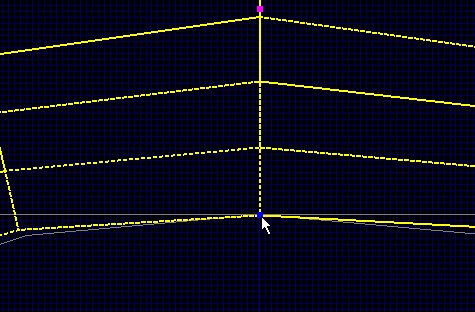

Perfect Arch Tutorial
Part Two
This tutorial will demonstrate the procedures that need be taken to make a perfect a arch.
Part Two
This tutorial will demonstrate the procedures that need be taken to make a perfect a arch.

|
Ok, now, you'll probably want to turn your arch around the proper way. You don't have to right now. It's just the way I've done it.
The way it looks now would work, but it's not the way to go if you want perfection. You'll notice from the picture that the shape of
this isn't correct. The ends and the very top are are not sized correctly with the grid. It doesn't hit both sides of the major grid to
make a 64 unit square. It's more like 58 or 59. And in between that it is squeezed a little. This is what we're going to fix. From here, we're going to drag the vertices to get the correct shape. First you'll need to resize this to a descent grid size. I like to use Grid16, but you may use what ya like. You'll want to resize it to the size you want it to be when finished. The only important thing here is that only the outer edges of this should be hitting the major grid. This makes it easier on you to get it to where it needs to be with the way I do this. You'll find out later on what I mean by this as you make more of these. Also, I don't know if this is the way the guys at ID Software does their arches, it's just the way I found to do it to look correct. |

|
Ok, from here, you'll need to make an End cap. I use the End cap
because it the correct shape already and does not need to be reshaped. It is the standard shape of all the curves in Quake III Arena. First draw another brush, any size, and go to the Curve menu and select End cap. Now turn it and position it by your arch to look like the picture. From this you can see where the imperfections are. Make CERTAIN that the End cap is positioned correctly on the major grid lines, as shown. After you've done that, unselect the End cap and select the arch. you may have to move these around a little so you can select each one when you like. By that, I mean, the End cap should be in front of the arch. |

|
After you have everything in position and the arch selected, go to the Selection menu and select Drag/Drag Vertices. |

|
Here you should see the Vertices around the arch. These are what we move to reposition the arch so it is the correct shape. Now, this can get a little tricky too. First, save your work. You don't have to unselect anything to so. |

|
First you'll need to set your grid again to Grid1 and zoom in to see the grid lines. Now, go to the bottom left end of the arch and position your mouse over the right Vertice. |

|
Now press and hold the left button and drag the corner right Vertice to the right
so that the corners of both the arch and the End cap are perfectly in line. One thing you'll have to be careful about is if you click on a Vertice and let off and go right back to it and drag it again, you'll notice that there are more Vertices under the one and/or ones you moved. This can get aggravating. Not to worry though. Just hit escape and move the Vertice back to where ya started. There are 5 Vertices that need to be moved for the bottom. Then 5 for the top and 5 for the middle. There are 15 Vertices all together that need to be moved. Ok, now go onto the middle bottom Vertice. |
|  | Now align that to the very top of the End cap. Now go on to the right end of the arch. |

|
Align this one up with the corners. Now just move up to the Vertice between the right end and the middle one. |

|
This one is a little tricky. The Vertice isn't at the corner or where the lines meet but up into the arch a little. You can see it in the picture. Just move it down and to the left and align the line of both the Arch and the End cap. Now one more at the other end. |

|
Same as the last. Line it up the same way. Now zoom out and the next picture is what it should look like all lined up. |

|
This is the way it looks with the correct shape at the bottom. Now save your work and we'll move onto the top Vertices. Which is Part Three |